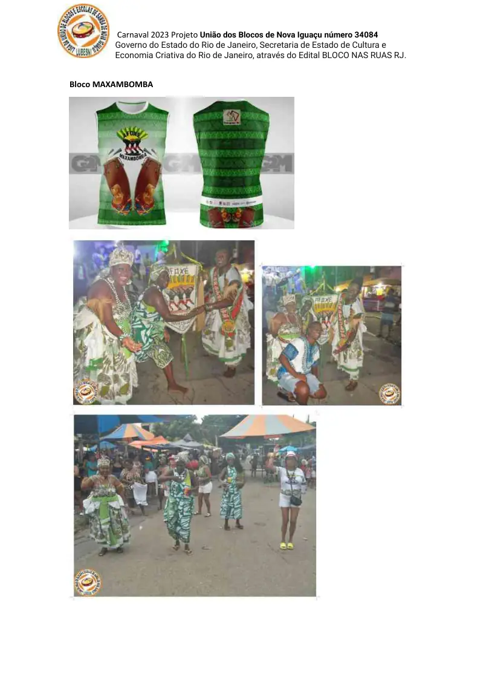
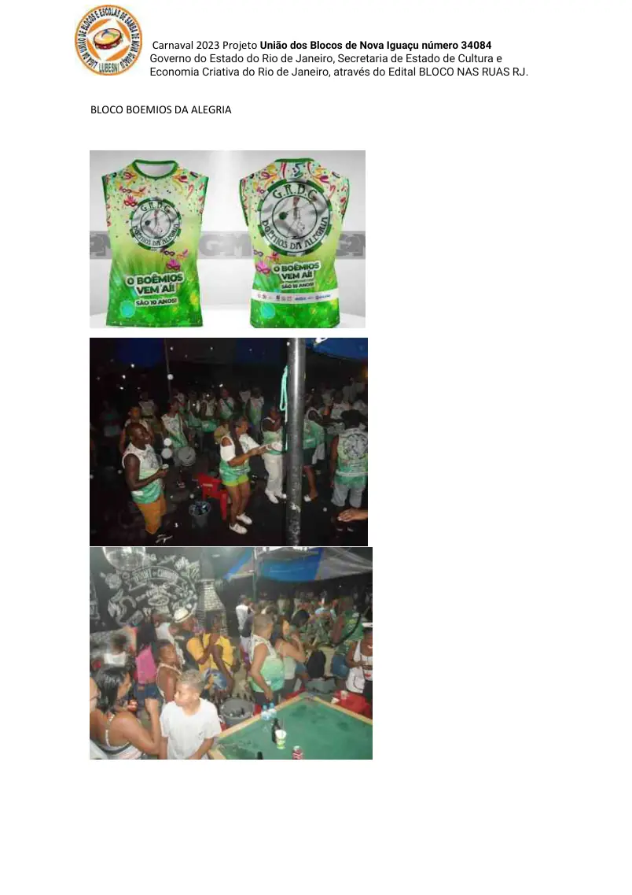
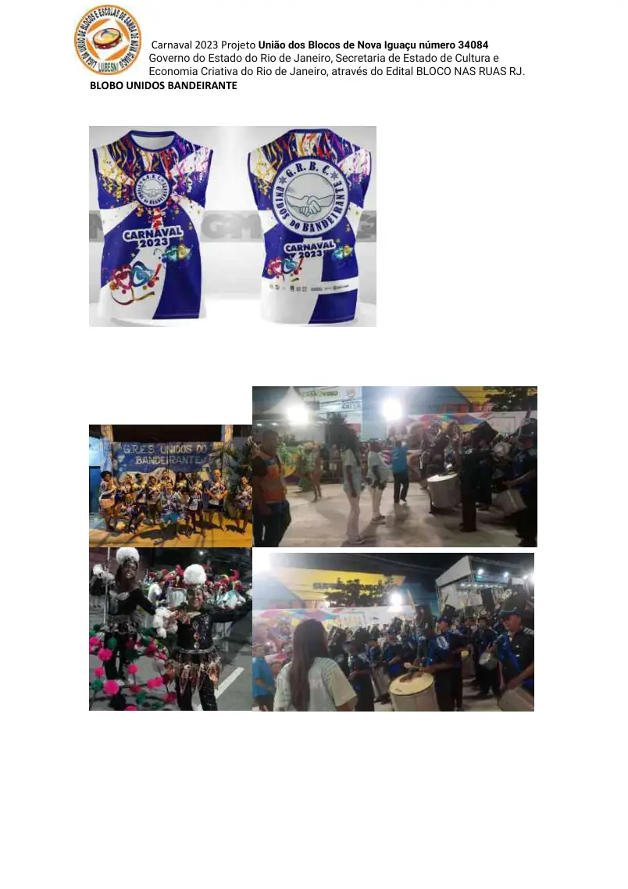
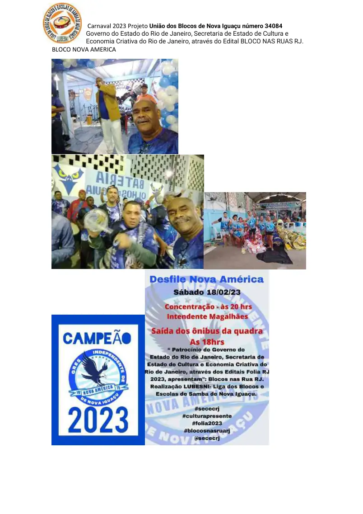
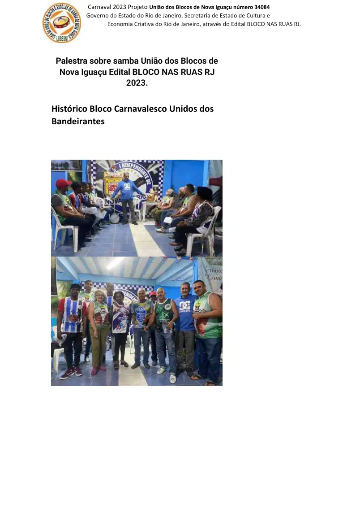

Identificação do projeto
As páginas do portfólio repetem a identificação “Carnaval 2023 — Projeto União dos Blocos de Nova Iguaçu número 34084”.
Fonte páginas 6–12O portfólio identifica o Projeto União dos Blocos de Nova Iguaçu nº 34084 no âmbito do Edital BLOCO NAS RUAS RJ, do Governo do Estado do Rio de Janeiro e da Secretaria de Estado de Cultura e Economia Criativa.
Conteúdo organizado sem transformar propostas futuras em realizações passadas. Cada afirmação principal está vinculada às páginas do portfólio.
As páginas do portfólio repetem a identificação “Carnaval 2023 — Projeto União dos Blocos de Nova Iguaçu número 34084”.
Fonte páginas 6–12O material registra Governo do Estado do Rio de Janeiro e Secretaria de Estado de Cultura e Economia Criativa, através do Edital BLOCO NAS RUAS RJ.
Fonte página 6O conjunto visual inclui registros do Maxambomba, Boêmios da Alegria, Unidos do Bandeirante e Nova América, entre outras páginas do projeto.
Fonte páginas 6–12O portfólio também registra palestra sobre samba vinculada ao Projeto União dos Blocos de Nova Iguaçu / Edital BLOCO NAS RUAS RJ em 2023.
Fonte página 84As imagens abaixo são reproduções das páginas-fonte usadas para esta ficha de comprovação.





Esta ficha foi construída a partir do Portfólio LUBESNI anexado ao acervo institucional. Para uso em editais, recomenda-se enviar o PDF original junto com o endereço desta página e, quando houver, a fonte pública externa indicada.